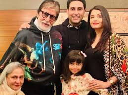
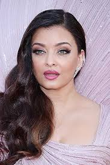

<!-- <!DOCTYPE html>
<html lang="en">
<head>
    <style>
      .outerbox{
        border: 2px solid red;
        display: flex;
        gap: 10px; 
        width: 100%;
        box-sizing: border-box;
        margin-top: 40px;
      }
      .innerbox{
        border: 2px solid green;
        display: flex;
        gap: 10px; 
        width: 35%;
        box-sizing: border-box;
        margin-left: 150px;
      }
      .singleimage{
       height: 200px;
       width: 200px; 
      }
      .familyimage{
       height: 300px;
       width: 400px;
      }
      .firstbox{
        border: 2px solid red;
        width: 100%;
        box-sizing: border-box;
        margin-top: 40px;
        text-align: center;
      }
    </style>
    <meta charset="UTF-8">
    <meta name="viewport" content="width=device-width, initial-scale=1.0">
    <title>Document</title>
</head>
<body>
  <div class="firstbox">
    
    <p style="text-align: left;"><a href="https://www.google.com/search?q=amitabh+bachchan+family&rlz=1C1NHXL_enIN1051IN1051&oq=amithab+bachan+fam&gs_lcrp=EgZjaHJvbWUqEAgBEAAYkQIYsQMYgAQYigUyBggAEEUYOTIQCAEQABiRAhixAxiABBiKBTINCAIQABiRAhiABBiKBTINCAMQABiRAhiABBiKBTINCAQQABiRAhiABBiKBTIJCAUQABgKGIAEMgkIBhAAGAoYgAQyCQgHEAAYChiABDIJCAgQABgKGIAEMgkICRAAGAoYgATSAQkxOTQwNWowajeoAgiwAgHxBRPmTbyd_D5B8QUT5k28nfw-QQ&sourceid=chrome&ie=UTF-8">Amitabh Bachchan</a> is married to actress Jaya Bachchan (née Bhaduri), with whom he starred in films such as Abhimaan (1973; “Pride”) and Mili (1975). Their son Abhishek, daughter-in-law Aishwarya Rai Bachchan, and grandson Agastya Nanda (son of Bachchan's daughter Shweta Bachchan Nanda) are actors as well.
      </div>
</p>
  <div class="outerbox">
    <div class="innerbox">
        
        <p><a href="https://www.google.com/search?q=amitabh+bachchan&rlz=1C1NHXL_enIN1051IN1051&oq=amitabh+bachchan&gs_lcrp=EgZjaHJvbWUqBwgAEAAYjwIyBwgAEAAYjwIyDAgBEC4YJxiABBiKBTIGCAIQRRg7MgwIAxAuGEMYgAQYigUyDQgEEAAYkQIYgAQYigUyBggFEEUYPDIGCAYQRRg8MgYIBxBFGDzSAQgyNjc0ajBqN6gCALACAA&sourceid=chrome&ie=UTF-8">Amitabh Bachchan</a> born on 11th October 1942, Amitabh Harivansh Rai Bachchan is one of the most iconic film stars in the history of Indian cinema. Instantly recognizable courtesy of his unparalleled `baritone` voice and imposing frame, the superstar is an integral part of Bollywood and Indian television history.</p>
    </div>
    <div class="innerbox">
        
        <p><a href="https://www.google.com/search?q=jaya+bachchan&sca_esv=685d635ce644e565&rlz=1C1NHXL_enIN1051IN1051&sxsrf=AE3TifOWgXjv-qp6WjMUzQEolqs3VRe1Aw%3A1748001534043&ei=_mIwaLK1ApusseMP8rGmuQ8&oq=jaya+ba&gs_lp=Egxnd3Mtd2l6LXNlcnAiB2pheWEgYmEqAggCMgoQIxiABBgnGIoFMgQQIxgnMgoQIxiABBgnGIoFMg0QLhiABBixAxgUGIcCMg0QABiABBixAxgUGIcCMgUQABiABDINEAAYgAQYsQMYQxiKBTIFEAAYgAQyCBAAGIAEGLEDMgoQABiABBgCGMsBSOg6UKQIWIkncAF4AZABAJgBoQSgAdQNqgEJMC40LjIuNS0xuAEByAEA-AEBmAIIoALtDqgCEsICBxAuGCcY6gLCAgcQIxgnGOoCwgINEC4Y0QMYxwEYJxjqAsICDRAjGPAFGCcYyQIY6gLCAhYQLhiABBhDGLQCGMgDGIoFGOoC2AEBwgIKEC4YgAQYQxiKBcICChAAGIAEGEMYigXCAg0QLhiABBixAxhDGIoFwgIKEC4YgAQYFBiHAsICChAuGIAEGAIYywHCAggQLhiABBixA5gDG_EFQ4xk7bkbGp66BgYIARABGAiSBwkxLjMuMi4xLjGgB43QAbIHCTAuMy4yLjEuMbgH0g7CBwUzLTYuMsgHjQE&sclient=gws-wiz-serp">Jaya Bachchan</a> is an Indian actress and politician. She is serving as member of the parliament in the Rajya Sabha from the Samajwadi Party since 2004. Having worked in Hindi films and Bengali films, she is noted for reinforcing a natural style of acting in both mainstream and arthouse cinema.</p>
    </div>
  </div>
  <div class="outerbox">
    <div class="innerbox">
        
        <p><a href="https://www.google.com/search?q=abhishek+bachchan&sca_esv=685d635ce644e565&rlz=1C1NHXL_enIN1051IN1051&sxsrf=AE3TifOoHsSBVCiLqGwKkS_RaLh3JF-vpg%3A1748001641148&ei=aWMwaILyCOyWnesP94zUsAw&gs_ssp=eJzj4tTP1TcwKq9MNjBg9BJMTMrILM5IzVZISkzOSM5IzAMAjRIJ1w&oq=abh&gs_lp=Egxnd3Mtd2l6LXNlcnAiA2FiaCoCCAAyChAuGIAEGCcYigUyChAAGIAEGEMYigUyDRAAGIAEGLEDGEMYigUyChAAGIAEGEMYigUyDhAuGIAEGLEDGIMBGIoFMgoQLhiABBhDGIoFMggQLhiABBixAzINEC4YgAQYsQMYQxiKBTIKEAAYgAQYQxiKBTILEC4YgAQYsQMY1AIyFxAuGIAEGIoFGJcFGNwEGN4EGN8E2AEBSMMhUIgFWPkGcAF4AZABAJgBgAKgAawFqgEFMC4xLjK4AQHIAQD4AQGYAgagAvszqAIUwgIHEC4YJxjqAsICBxAjGCcY6gLCAg0QLhjRAxjHARgnGOoCwgINECMY8AUYJxjJAhjqAsICEBAAGAMYtAIY6gIYjwHYAQHCAhAQLhgDGLQCGOoCGI8B2AEBwgIKECMYgAQYJxiKBcICEBAuGIAEGLEDGEMYgwEYigWYAxXxBSRufqWKiZlxugYGCAEQARgKkgcLMS4wLjMuOC0xLjGgB8ZusgcDMi0zuAflBcIHCTAuMS4wLjQuMcgHWg&sclient=gws-wiz-serp">Abhishek Bachchan</a> (pronounced [əbʰɪʂeːk ˈbətːʃən]; born 5 February 1976) is an Indian actor and film producer known for his work in Hindi films. Part of the Bachchan family, he is the son of actors Amitabh Bachchan and Jaya Bachchan.</p>
    </div>
    <div class="innerbox">
        
        <p><a href="https://www.google.com/search?q=aishwarya+rai&sca_esv=685d635ce644e565&rlz=1C1NHXL_enIN1051IN1051&sxsrf=AE3TifN_uTgY8FAHUms72s7TZU7HCLxzkg%3A1748001895851&ei=Z2QwaPveM4fhseMPu72hoAQ&gs_ssp=eJzj4tTP1TcwNcjJKTFg9OJNzCzOKE8sqkxUKErMBABomwht&oq=ais&gs_lp=Egxnd3Mtd2l6LXNlcnAiA2FpcyoCCAEyChAjGIAEGCcYigUyEBAuGIAEGLEDGEMYgwEYigUyEBAAGIAEGLEDGEMYgwEYigUyChAAGIAEGEMYigUyEBAAGIAEGLEDGEMYgwEYigUyCxAAGIAEGLEDGIMBMgoQABiABBhDGIoFMgsQABiABBixAxiDATIKEAAYgAQYQxiKBTIIEC4YgAQYsQMyHxAuGIAEGLEDGEMYgwEYigUYlwUY3AQY3gQY3wTYAQFIsRVQAFj2BXAAeAGQAQCYAZUBoAG3A6oBAzAuM7gBA8gBAPgBAZgCBaACqB7CAgoQLhiABBgnGIoFwgINEC4YgAQYQxjUAhiKBcICChAuGIAEGEMYigXCAhcQLhiABBiKBRiXBRjcBBjeBBjfBNgBAZgDALoGBggBEAEYFJIHBzAuMy43LTKgB-lTsgcDMC4zuAfjA8IHBzAuMS4xLjPIBzA&sclient=gws-wiz-serp">Aishwarya Rai Bachchan</a> is an Indian actress who is primarily known for her work in Hindi and Tamil films. Rai won the Miss World 1994 pageant and later established herself as one of the most-popular and influential celebrities in India. She has received numerous accolades for her acting, including two Filmfare Awards.</p>
    </div>
  </div>
  <br><br>
  <center><div class="innerbox">
    
    <p style="text-align: left;"><a href="https://www.google.com/search?q=aaradhya+bachchan&rlz=1C1NHXL_enIN1051IN1051&oq=aa&gs_lcrp=EgZjaHJvbWUqDggAEEUYJxg7GIAEGIoFMg4IABBFGCcYOxiABBiKBTIOCAEQRRgnGDsYgAQYigUyBggCEEUYOTIKCAMQABixAxiABDIKCAQQABixAxiABDIPCAUQLhhDGLEDGIAEGIoFMgYIBhBFGDwyBggHEEUYPNIBCDUwNzNqMGo3qAIAsAIA&sourceid=chrome&ie=UTF-8">Aaradhaya Bachchan</a> is the daughter of the famous Bollywood actors - Abhishek Bachchan and Aishwarya Rai Bachchan. She is the granddaughter of vetran actors Amitabh Bachchan and Jaya Bachchan.
</p>
    
  </div></center>
</body>
</html> -->

<!-- <a href="https://www.google.com/search?q=jaya+bachchan&sca_esv=685d635ce644e565&rlz=1C1NHXL_enIN1051IN1051&sxsrf=AE3TifOWgXjv-qp6WjMUzQEolqs3VRe1Aw%3A1748001534043&ei=_mIwaLK1ApusseMP8rGmuQ8&oq=jaya+ba&gs_lp=Egxnd3Mtd2l6LXNlcnAiB2pheWEgYmEqAggCMgoQIxiABBgnGIoFMgQQIxgnMgoQIxiABBgnGIoFMg0QLhiABBixAxgUGIcCMg0QABiABBixAxgUGIcCMgUQABiABDINEAAYgAQYsQMYQxiKBTIFEAAYgAQyCBAAGIAEGLEDMgoQABiABBgCGMsBSOg6UKQIWIkncAF4AZABAJgBoQSgAdQNqgEJMC40LjIuNS0xuAEByAEA-AEBmAIIoALtDqgCEsICBxAuGCcY6gLCAgcQIxgnGOoCwgINEC4Y0QMYxwEYJxjqAsICDRAjGPAFGCcYyQIY6gLCAhYQLhiABBhDGLQCGMgDGIoFGOoC2AEBwgIKEC4YgAQYQxiKBcICChAAGIAEGEMYigXCAg0QLhiABBixAxhDGIoFwgIKEC4YgAQYFBiHAsICChAuGIAEGAIYywHCAggQLhiABBixA5gDG_EFQ4xk7bkbGp66BgYIARABGAiSBwkxLjMuMi4xLjGgB43QAbIHCTAuMy4yLjEuMbgH0g7CBwUzLTYuMsgHjQE&sclient=gws-wiz-serp">Jaya Bachchan</a> -->

<!DOCTYPE html>
<html lang="en">
<head>
  <meta charset="UTF-8">
  <title>Z-Index Example</title>
  <style>
    .box {
      width: 200px;
      height: 200px;
      position: absolute;
    }

    .red-box {
      background-color: red;
      top: 50px;
      left: 50px;
      z-index: 1;
      border: 2px solid black;
    }

    .blue-box {
      background-color: blue;
      top: 100px;
      left: 100px;
      z-index: 3;
      border: 2px solid black;
    }

    .yellow-box {
      background-color: yellow;
      top: 200px;
      left: 200px;
      z-index: 2;
      border: 2px solid black;
    }
  </style>
</head>
<body>
  <div class="box red-box"></div>
  <div class="box blue-box"></div>
  <div class="box yellow-box"></div>
</body>
</html>
